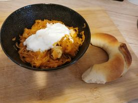

No-Meat Szekely Cabbage

Description
This dish is called “Székely” meaning “Transylvanian” but
interestingly it is not named after the Transylvanian region but
someone in Hungarian history the 1800-s whose surname was
“Székely” (József Székely, writer) and who is credited with
inventing the dish when asking for the meaty paprika stew,
porkolt and sour cabbage mixed together when dining out.
This version is made without meat. It is filling and one
of the most delicious winter dishes.The finished dish served with
sour cream white bread.
Ingredients
- 1 pack of smoked tofu
- 1/2 pack of bastard (vegetable sausage)
- 500g sauerkraut
- 1 big white onion chopped
- 2 tbsp oil
- 1 tbsp paprika powder
- 1 tsp caraway seeds (ground)
- salt, pepper
Steps
- Chop the onion and cut the tofu and the bastard
into bite sized chunks.
- In a large pot gently fry the onion on the oil,
sprinkle in the paprika powder,
stir then add chopped tofu and bastard.
- Season with black pepper, caraway seeds and
salt – check how salty your sauerkraut
is beforehand, you may have to use less extra salt.
- Add the soured cabbage – sauerkraut – and cook till all
soft and well cooked.
- Serve with white bread on the side and a bit of the rest of
the sour cream on top when plated.